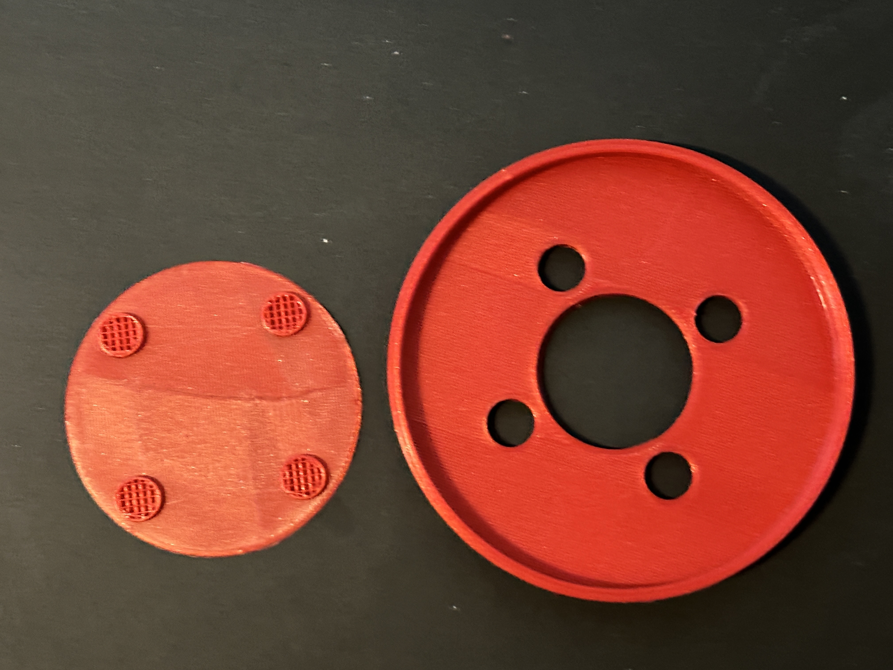

A5! Lamps part 2! And molding and casting part 1!
by Kefeng Wang in HCDE598
PART TWO - The LAMP
This is my lamp

- Lamp Design in Rhino
- Lampshade reference fromThingiverse
- Lamp base reference fromThingiverse
- Special Thanks to Kyle Wang for the help of Rhino/3D modelling Software !!!
| Parts | lampshade | Joint | Base |
|---|---|---|---|
| Height | 100.02 mm | 15.20 mm | 148.32 mm |
| Width | 116.09 mm | 124.19 mm | 121.84 mm |
| Details |  |
 |
 |
| Time on printing | 20+ hours | 3hours and 40mins | 17+ hours |
The first part I printed out is the joint part because it is the least time-consuming one. Also, I wanted to test the sizes of the holes and four small cylinders which are attached to the base part.

The first biggest challenge of creating the lamp is to make the innards can successfully insert into the lamp base. It took me hours to figure out whether the dimension of the innard was smaller than that of the narrowest part of the base. It wasn't easy to measure the inside diameter until I figured out how to add guidelines.
The second challenge was to make the innard stay at the top of the base. In order to solve this problem, I have added a tube shown in yellow at the middle of the base to support the lamp innard. Because I forgot to add support in Cura, the printing failed at first.
There are three parts to build up my lamp:
 YouTube Link: My lamp Design
YouTube Link: My lamp Design
Here is all the documentation for assignment 5 Part Two! There are more documentation about the Molding and Casting, Please visit Assignment 6 page.
Here is all the documentation for assignment 5 part two!
There are more documentation about the Molding and Casting, Please visit Assignment 6 page.
or you can go back to the HOME PAGE from here.